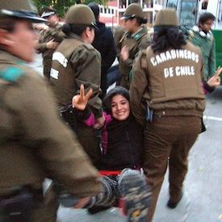

|
By Susana Pimiento
On June 22, about a hundred activists held a nonviolent protest at the gate of the Fuerte Aguayo Chilean Naval Base, in the coastal town of Concón, 90 miles northwest of Santiago, Chile. The US Southern Command built a 30,000-square foot complex of eight buildings designed to simulate an urban environment and to train police and military forces from throughout Latin America on military operations on urban terrain. The protesters were demanding the closure of the base built by the US Southern Command inside Fuerte Aguayo which opened in April 2012. The action was a joint effort by several Chilean human rights and peace groups, including School of the Americas Watch and FOR’s sister organization Serpaj Chile. Read more.
With both sadness at departure and joy in the path we've walked together, we bid farewell this month to Liza Smith, who has served for the last five and a half years as coordinator of the FOR Colombia team and previously as Colombia campaign grassroots organizer. We also welcome, as the new coordinator of the FOR Colombia Peace Presence, Candice Camargo, who has spent the last six years as an activist and organizer, including working from 2009 to 2012 for Witness for Peace in Colombia. Read more.
 By Gina Spigarelli By Gina Spigarelli
Thanks to everyone who participated in our urgent action appeal this Spring in response to combat in La Unión and other dangerous army practices in and near the Peace Community. While fighting is regularly and unnecessarily staged in civilian populated areas around the Peace Community, the combat on April 9 was the first time in several years that a FOR volunteer and Peace Community members were caught in crossfire within their home village of La Union. The event set off a lot of advocacy work for many in Colombia and the United States. Read more.
|